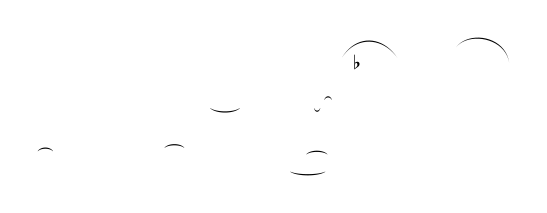
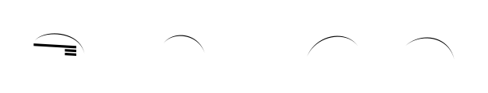
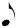
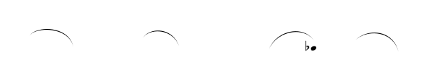
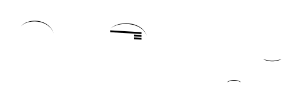
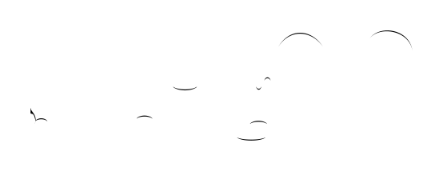
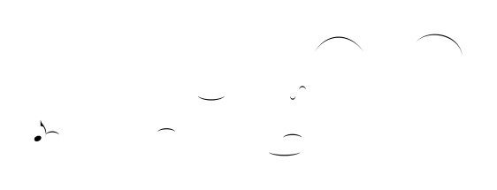

candidate #16
x=222.358

candidate #18
x=249.285
Every MusicSymbolCandidate inside the free-stem endpoint search radius is shown, including candidates rejected by geometry before PCA. The SVG is the exact smooth candidate geometry converted to contours for recognition.
| # | Candidate | Stem | Endpoint distance | PCA candidates | Verdict |
|---|---|---|---|---|---|
| 001 | candidate #16 | Down x=222.358 | 0 sp | — | rejected before PCA: width 0sp < 0.12sp |
| 002 | candidate #18 | Up x=249.285 | 0 sp | — | rejected before PCA: width 0sp < 0.12sp |
| # | Candidate | Stem | Endpoint distance | PCA candidates | Verdict |
|---|---|---|---|---|---|
| 013 |  candidate #224 | Down x=501.436 | 0 sp | — | rejected before PCA: width 0sp < 0.12sp |
| 014 |  candidate #177 | Up x=508.584 | 0 sp | — | rejected before PCA: width 0sp < 0.12sp |
| 015 |  candidate #180 | Up x=508.584 | 0.63 sp | 1/8 Down: conf=0.194 d=4.143 1/16 Down: conf=0.171 d=4.84 | rejected by PCA |
| 016 |  candidate #181 | Up x=508.584 | 0.63 sp | 1/8 Down: conf=0.197 d=4.087 1/16 Down: conf=0.173 d=4.769 | rejected by PCA |
| 017 |  candidate #180 | Up x=540.237 | 0 sp | 1/8 Down: conf=0.194 d=4.143 1/16 Down: conf=0.171 d=4.84 | rejected by PCA |
| 018 |  candidate #181 | Up x=540.237 | 0 sp | 1/8 Down: conf=0.197 d=4.087 1/16 Down: conf=0.173 d=4.769 | rejected by PCA |
| 019 |  candidate #188 | Up x=540.237 | 0 sp | — | rejected before PCA: width 0sp < 0.12sp |
| 020 |  candidate #180 | Up x=571.89 | 0.536 sp | 1/8 Down: conf=0.194 d=4.143 1/16 Down: conf=0.171 d=4.84 | rejected by PCA |
| 021 |  candidate #181 | Up x=571.89 | 0.536 sp | 1/8 Down: conf=0.197 d=4.087 1/16 Down: conf=0.173 d=4.769 | rejected by PCA |
| 022 |  candidate #191 | Up x=571.89 | 0 sp | — | rejected before PCA: width 0sp < 0.12sp |
| # | Candidate | Stem | Endpoint distance | PCA candidates | Verdict |
|---|---|---|---|---|---|
| 023 |  candidate #250 | Down x=618.294 | 0 sp | — | rejected before PCA: width 0sp < 0.12sp |
| 024 |  candidate #251 | Up x=683.898 | 0.562 sp | 1/8 Down: conf=0.200 d=3.996 1/16 Down: conf=0.164 d=5.111 | rejected by PCA |
| 025 |  candidate #253 | Up x=683.898 | 0.562 sp | 1/8 Down: conf=0.197 d=4.087 1/16 Down: conf=0.173 d=4.769 | rejected by PCA |
| 026 |  candidate #267 | Up x=683.898 | 0 sp | — | rejected before PCA: width 0sp < 0.12sp |
| # | Candidate | Stem | Endpoint distance | PCA candidates | Verdict |
|---|---|---|---|---|---|
| 027 |  candidate #301 | Down x=131.88 | 0 sp | — | rejected before PCA: width 0sp < 0.12sp |
| 028 |  candidate #302 | Up x=205.398 | 0.437 sp | 1/8 Down: conf=0.192 d=4.222 1/16 Down: conf=0.167 d=4.983 | rejected by PCA |
| 029 |  candidate #304 | Up x=205.398 | 0.437 sp | 1/8 Down: conf=0.217 d=3.603 1/16 Down: conf=0.172 d=4.803 | rejected by PCA |
| 030 |  candidate #318 | Up x=205.398 | 0 sp | — | rejected before PCA: width 0sp < 0.12sp |
| # | Candidate | Stem | Endpoint distance | PCA candidates | Verdict |
|---|---|---|---|---|---|
| 031 |  candidate #341 | Down x=293.839 | 0 sp | — | rejected before PCA: width 0sp < 0.12sp |
| 032 |  candidate #342 | Up x=357.072 | 0.478 sp | 1/8 Down: conf=0.250 d=3.004 1/16 Down: conf=0.174 d=4.735 | rejected by PCA |
| 033 |  candidate #344 | Up x=357.072 | 0.521 sp | 1/8 Down: conf=0.217 d=3.603 1/16 Down: conf=0.172 d=4.803 | rejected by PCA |
| 034 |  candidate #356 | Up x=357.072 | 0 sp | — | rejected before PCA: width 0sp < 0.12sp |
| # | Candidate | Stem | Endpoint distance | PCA candidates | Verdict |
|---|---|---|---|---|---|
| 035 |  candidate #374 | Up x=475.613 | 0 sp | 1/16 Down: conf=0.241 d=3.152 1/8 Down: conf=0.179 d=4.593 | rejected: PCA direction Down != stem Up |
| 036 |  candidate #376 | Up x=475.613 | 0 sp | 1/8 Down: conf=0.622 d=0.607 1/16 Down: conf=0.218 d=3.585 | rejected: PCA direction Down != stem Up |
| 037 |  candidate #377 | Up x=475.613 | 0 sp | — | rejected before PCA: width 0sp < 0.12sp |
| 038 |  candidate #378 | Up x=475.613 | 1.13 sp | 1/8 Down: conf=0.204 d=3.907 1/16 Down: conf=0.172 d=4.823 | rejected by PCA |
| 039 |  candidate #379 | Up x=475.613 | 1.13 sp | 1/8 Down: conf=0.217 d=3.603 1/16 Down: conf=0.172 d=4.803 | rejected by PCA |
| 040 |  candidate #378 | Up x=509.376 | 0 sp | 1/8 Down: conf=0.204 d=3.907 1/16 Down: conf=0.172 d=4.823 | rejected by PCA |
| 041 |  candidate #379 | Up x=509.376 | 0 sp | 1/8 Down: conf=0.217 d=3.603 1/16 Down: conf=0.172 d=4.803 | rejected by PCA |
| 042 |  candidate #386 | Up x=509.376 | 0 sp | — | rejected before PCA: width 0sp < 0.12sp |
| 043 |  candidate #378 | Up x=550.262 | 0 sp | 1/8 Down: conf=0.204 d=3.907 1/16 Down: conf=0.172 d=4.823 | rejected by PCA |
| 044 |  candidate #379 | Up x=550.262 | 0.495 sp | 1/8 Down: conf=0.217 d=3.603 1/16 Down: conf=0.172 d=4.803 | rejected by PCA |
| 045 |  candidate #390 | Up x=550.262 | 0 sp | — | rejected before PCA: width 0sp < 0.12sp |
| # | Candidate | Stem | Endpoint distance | PCA candidates | Verdict |
|---|---|---|---|---|---|
| 050 |  candidate #435 | Down x=124.491 | 0 sp | — | rejected before PCA: width 0sp < 0.12sp |
| 051 |  candidate #436 | Up x=190.627 | 0.437 sp | 1/8 Down: conf=0.187 d=4.345 1/16 Down: conf=0.165 d=5.061 | rejected by PCA |
| 052 |  candidate #438 | Up x=190.627 | 0.525 sp | 1/8 Down: conf=0.191 d=4.242 1/16 Down: conf=0.158 d=5.315 | rejected by PCA |
| 053 |  candidate #449 | Up x=190.627 | 0 sp | — | rejected before PCA: width 0sp < 0.12sp |
| # | Candidate | Stem | Endpoint distance | PCA candidates | Verdict |
|---|---|---|---|---|---|
| 054 |  candidate #466 | Down x=276.697 | 0 sp | — | rejected before PCA: width 0sp < 0.12sp |
| 055 |  candidate #467 | Up x=348.1 | 0.394 sp | 1/8 Down: conf=0.191 d=4.249 1/16 Down: conf=0.165 d=5.079 | rejected by PCA |
| 056 |  candidate #469 | Up x=348.1 | 0.396 sp | 1/8 Down: conf=0.191 d=4.242 1/16 Down: conf=0.158 d=5.315 | rejected by PCA |
| 057 |  candidate #482 | Up x=348.1 | 0 sp | — | rejected before PCA: width 0sp < 0.12sp |
| # | Candidate | Stem | Endpoint distance | PCA candidates | Verdict |
|---|---|---|---|---|---|
| 068 |  candidate #563 | Up x=648.816 | 0 sp | — | rejected before PCA: width 0sp < 0.12sp |
| # | Candidate | Stem | Endpoint distance | PCA candidates | Verdict |
|---|---|---|---|---|---|
| 069 |  candidate #28 | Down x=174.35 | 0 sp | — | rejected before PCA: width 0sp < 0.12sp |
| 070 |  candidate #31 | Up x=203.126 | 0 sp | 1/8 Down: conf=0.188 d=4.331 1/16 Down: conf=0.187 d=4.336 | rejected by PCA |
| 071 |  candidate #33 | Up x=203.126 | 0 sp | 1/8 Down: conf=0.192 d=4.207 1/16 Down: conf=0.180 d=4.544 | rejected by PCA |
| 072 |  candidate #34 | Up x=203.126 | 0 sp | — | rejected before PCA: width 0sp < 0.12sp |
| 073 |  candidate #31 | Up x=229.663 | 0.936 sp | 1/8 Down: conf=0.188 d=4.331 1/16 Down: conf=0.187 d=4.336 | rejected by PCA |
| 074 |  candidate #33 | Up x=229.663 | 0.936 sp | 1/8 Down: conf=0.192 d=4.207 1/16 Down: conf=0.180 d=4.544 | rejected by PCA |
| 075 |  candidate #36 | Up x=229.663 | 0 sp | — | rejected before PCA: width 0sp < 0.12sp |
| # | Candidate | Stem | Endpoint distance | PCA candidates | Verdict |
|---|---|---|---|---|---|
| 076 |  candidate #84 | Down x=299.117 | 0 sp | — | rejected before PCA: width 0sp < 0.12sp |
| 077 |  candidate #88 | Up x=330.004 | 0 sp | 1/8 Down: conf=0.200 d=4.012 1/16 Down: conf=0.185 d=4.404 | rejected by PCA |
| 078 |  candidate #90 | Up x=330.004 | 0 sp | 1/8 Down: conf=0.622 d=0.607 1/16 Down: conf=0.218 d=3.585 | rejected: PCA direction Down != stem Up |
| 079 |  candidate #92 | Up x=330.004 | 0 sp | — | rejected before PCA: width 0sp < 0.12sp |
| 080 |  candidate #88 | Up x=361.027 | 0.937 sp | 1/8 Down: conf=0.200 d=4.012 1/16 Down: conf=0.185 d=4.404 | rejected by PCA |
| 081 |  candidate #95 | Up x=361.027 | 0 sp | — | rejected before PCA: width 0sp < 0.12sp |
| # | Candidate | Stem | Endpoint distance | PCA candidates | Verdict |
|---|---|---|---|---|---|
| 082 |  candidate #273 | Down x=618.294 | 0 sp | — | rejected before PCA: width 0sp < 0.12sp |
| # | Candidate | Stem | Endpoint distance | PCA candidates | Verdict |
|---|---|---|---|---|---|
| 083 |  candidate #327 | Down x=131.88 | 0 sp | — | rejected before PCA: width 0sp < 0.12sp |
| # | Candidate | Stem | Endpoint distance | PCA candidates | Verdict |
|---|---|---|---|---|---|
| 084 |  candidate #362 | Up x=301.149 | 0 sp | — | rejected before PCA: width 0sp < 0.12sp |
| 085 |  candidate #367 | Down x=390.121 | 0 sp | — | rejected before PCA: width 0sp < 0.12sp |
| 086 |  candidate #368 | Down x=390.121 | 0.479 sp | — | rejected before PCA: height 0.129sp < 0.2sp |
| # | Candidate | Stem | Endpoint distance | PCA candidates | Verdict |
|---|---|---|---|---|---|
| 087 |  candidate #391 | Down x=452.901 | 0.447 sp | 1/16 Down: conf=0.197 d=4.07 1/8 Down: conf=0.133 d=6.521 | rejected by PCA |
| 088 |  candidate #395 | Down x=452.901 | 0 sp | — | rejected before PCA: width 0sp < 0.12sp |
| # | Candidate | Stem | Endpoint distance | PCA candidates | Verdict |
|---|---|---|---|---|---|
| 089 |  candidate #426 | Up x=606.081 | 0 sp | — | rejected before PCA: width 0sp < 0.12sp |
| # | Candidate | Stem | Endpoint distance | PCA candidates | Verdict |
|---|---|---|---|---|---|
| 090 |  candidate #457 | Down x=124.491 | 0 sp | — | rejected before PCA: width 0sp < 0.12sp |
| # | Candidate | Stem | Endpoint distance | PCA candidates | Verdict |
|---|---|---|---|---|---|
| 091 |  candidate #487 | Down x=276.697 | 0 sp | — | rejected before PCA: width 0sp < 0.12sp |
| # | Candidate | Stem | Endpoint distance | PCA candidates | Verdict |
|---|---|---|---|---|---|
| 092 |  candidate #536 | Down x=435.493 | 0 sp | — | rejected before PCA: width 0sp < 0.12sp |
| 093 |  candidate #540 | Up x=476.666 | 0 sp | 1/8 Down: conf=0.227 d=3.409 1/16 Down: conf=0.155 d=5.466 | rejected by PCA |
| 094 |  candidate #542 | Up x=476.666 | 0 sp | 1/8 Down: conf=0.622 d=0.607 1/16 Down: conf=0.218 d=3.585 | rejected: PCA direction Down != stem Up |
| 095 |  candidate #544 | Up x=476.666 | 0 sp | — | rejected before PCA: width 0sp < 0.12sp |
| 096 |  candidate #540 | Up x=510.856 | 0.937 sp | 1/8 Down: conf=0.227 d=3.409 1/16 Down: conf=0.155 d=5.466 | rejected by PCA |
| 097 |  candidate #547 | Up x=510.856 | 0 sp | — | rejected before PCA: width 0sp < 0.12sp |
| # | Candidate | Stem | Endpoint distance | PCA candidates | Verdict |
|---|---|---|---|---|---|
| 098 |  candidate #575 | Up x=648.816 | 0 sp | — | rejected before PCA: width 0sp < 0.12sp |


{kind=link}
{kind=link}
{kind=link}
{kind=link}
{kind=link}
{kind=link}
{kind=link}
{kind=link}
{kind=link}
{kind=link}
{kind=link}